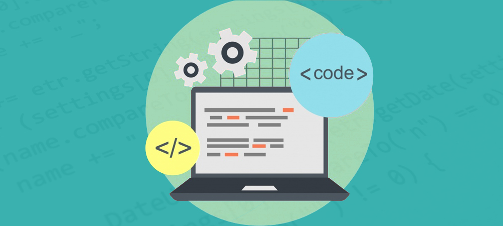

Coding standards is exactly what it says. It is the standards that coding has, it is the style, the indentation, the methods, and many more of a program. It is basically a set of guidelines that has to be followed. When I first heard that it had to be used in the software engineering course my reaction was not positive. I felt like everyone had a different style that they used when they code, some like to leave the closed bracket on the same line as the last line or others may like to leave the closing bracket on a line of its own. Whether a programmer chooses one or the other is up to them because it’s their preference whether or not they found one or the other easier to identify for them. I felt like coding standards took that away from the programmer. On top of having less of a choice of the style of our code, I felt like coding standards were just an extra step we had to take in order to have the file compiled correctly. I thought it would take up too much time to follow coding standards on top of already having to fix syntax errors. That was until I tried using coding standards on Intellij.
When I first started using Intellij and coding standards I noticed a little light bulb on the left side of a line that would either be yellow for warning or red for error. I thought this was just another way for the idle to show that there was an error in a particular line so I ignored the little light bulb and focused on where the error was in said particular line. In order for me to follow the coding standard I had to go back into every place there was a red squiggly line that indicated an error which took a substantial amount of time. There was an instance where I checked all of my indentations and spacing but could not find errors so I decided to see exactly what the red squiggly line was by clicking on the red light bulb. I had used the light bulb previously to see what the error was but I had not clicked on the error itself before, when I did I got a pleasant surprise. By clicking on the error on the light bulb the idle had automatically fixed the error for me.
In this very case where the idle pretty much does the coding standard fix for me I can see how it can be beneficial to follow a coding standard. It helped me organize through my functions better and break up parts of a program better to help me identify issues that may not be causing an error but an issue that is causing my program to not have the output I want. However if I were to use an idle that did not easily fix coding standards in a click of a button the way Intellij does I wouldn’t necessarily be in favor of coding standards. Especially in cases where there is a time constraint, having to go back and manually fix every error can take up a large amount of time.